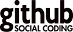

Juten Tach & hätzlich wellkumme!
Rails Girls comes to Cologne and during the free two-day workshop we'll dive into the magical world of Ruby on Rails just as uncomplicated and vivacious as Cologne!
Registration is closed.
You learn designing, prototyping and coding with the help from our coaches.
You need your own laptop, curiosity and a sprinkle of imagination!
Want to help? We are looking for volunteers and Rails coaches. Email us.
| 17.00 - 20.00 |
Installation partyGet know the attendees a little bit before hand. Bring your laptop if you can, so we can install Ruby on Rails for you.Where: Coworking-Space Gasmotorenfabrik, Deutz-Mülheimer-Straße 129 |
|---|---|
| 21.00 - |
Coach dinnerAll of the coaches are welcome to our coach dinner, where we'll go through the program for the next day. |
| 9:00 - 10:00 |
Registration, coffee and installation festDuring the morning we’ll install Ruby on Rails on your computer. |
|---|---|
| 10:00 - 10:15 |
WelcomeOutline of the day & word from sponsorsNadia Zaboura - The ultimate guide of CREATIVE.NRW - Creativity made in Cologne & NRW. |
| 10:20 - 10:45 |
Designing your web app -workshopBy Liane Thönnes & Tatjana Lajendäcker |
| 10:50 - 11:10 |
Tryruby.orgLet's get coding!By Jan Kus |
| 11:10 - 13:00 |
WORKSHOPJumpstart your first web application |
| 13:00 - 13:30 | Lunch |
| 13.30- 13:45 |
Bentobox - Understanding Web AppsRecap of what we’ve learned and how it all fits together.By Jakob Hilden |
| 13:45 - 14:30 |
Lighting talks from coachesHow I went from picking up programming to working in a software company - in a yearBy Joan Wolkerstorfer My life as a female programmer By Karen Sijbrandij M-I-N-S-W-A-N By Michael Bumann |
| 14:30 - 16:30 |
WORKSHOPExtend your application. |
| 20:00 - |
AfterpartyOpen for everyone, meet cool people interested in tech. |
Registration is closed.
Acceptances informed: September 13th
Rails Girls Cologne is co-organized with our awesome partners.
Want to help? We're looking for partners & sponsors for the non-profit event! Email us!
Adcloud is an independent technology and services provider for the optimised exchange of online advertising. With Adcloud technology, customers can run campaigns on their own advertising space and control these optimally. On the Adcloud marketplace all participants can manage their own advertising space and campaigns and either use these exclusively for their own customers and placements, or release them onto the entire platform to trade.
 Coworking Cologne is a Think & Do Ecosystem which helps to build Coworking Spaces, Fablabs, Think Tanks, Startup Accelerators, etc.
Coworking Cologne is a Think & Do Ecosystem which helps to build Coworking Spaces, Fablabs, Think Tanks, Startup Accelerators, etc.
Galaxy Cats ist ein innovatives und agiles Software-Unternehmen für Web-Anwendungen im Herzen von Köln. Wir erschaffen Software, die ebenso einzigartig und außergewöhnlich ist wie der Kunde, der sie beauftragt hat.
 GitHub is version control for software development and so much more. Whether it's a weekend side project, your favorite open source library, a startup destined for glory, or your company's app, GitHub helps everyone work together with tools for easier collaboration and more visibility. Check it out — open source is free!
 innoQ offers consulting and development services for challenging projects.
innoQ offers consulting and development services for challenging projects.
Pixum is one of the leading online photo services in Europe. The broad range of products covers the Pixum Photo Book, Photo Calendars, individual Greeting Cards and a huge selection of pieces of decoration as well as Photo Gifts and classical Photo Prints. Furthermore Pixum stands for a high-quality customer service, has won more than 30 tests and offers its services in nine languages.
 Railslove is a small team of passionate hackers, thinkers and designers creating juicy stuff for the web.
Railslove is a small team of passionate hackers, thinkers and designers creating juicy stuff for the web.
triAGENS is developing the universal, open source NoSQL database ArangoDB.
 Wooga is one of the most popular social games developers in the world. The company is based in Berlin, Europe's creative heart and mecca for tech industry innovators. Wooga was founded in 2009 and now employs over 200 people from more than 30 nations, who work together to make top titles for iOS and Facebook. The studio's signature approach to game design emphasizes emotional character development, usability, and superb localization. Wooga's free-to-play games are enjoyed by over 50 million players per month.
Wooga is one of the most popular social games developers in the world. The company is based in Berlin, Europe's creative heart and mecca for tech industry innovators. Wooga was founded in 2009 and now employs over 200 people from more than 30 nations, who work together to make top titles for iOS and Facebook. The studio's signature approach to game design emphasizes emotional character development, usability, and superb localization. Wooga's free-to-play games are enjoyed by over 50 million players per month.
Zweitag is a software engineering consultancy from Münster, Germany. We create beautiful, high quality web apps. Our agile solutions for complex technical problems are based on the right tools (e.g. Ruby on Rails, node.js, NoSQL).
How much does the workshop cost? Nothing, it's free! You just need to be excited!
Who is this aimed for? Women of any age with basic knowledge of working with a computer. We’ve had people of all ages taking part. Most of the speeches are given in english, but small group work is done in german. Please bring your laptop.
Can men attend? Yes, but you need to be accompanied by an interested lady. Also, girls are given a priority.
I know how to program - How can I help? We’re also looking for people to be coaches. We’ll have a two-three hour workshop before the event to walk you through the curriculum. Email us